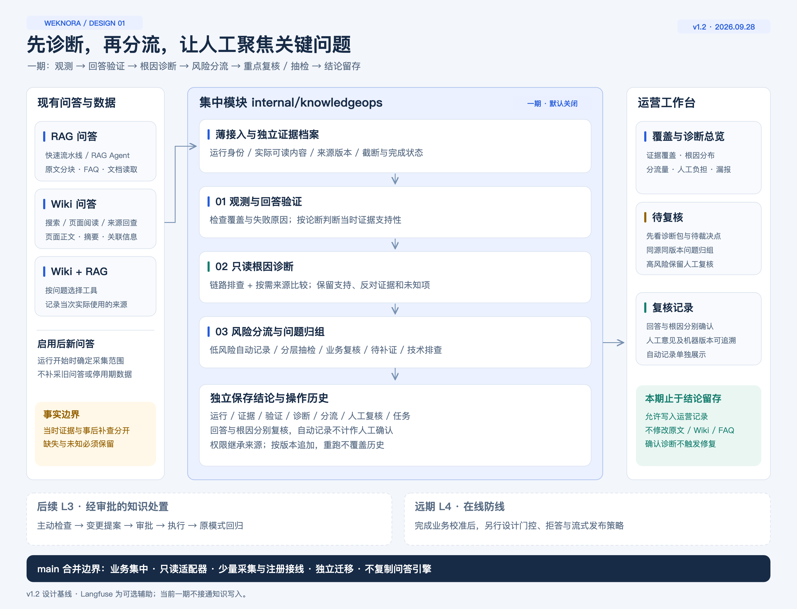
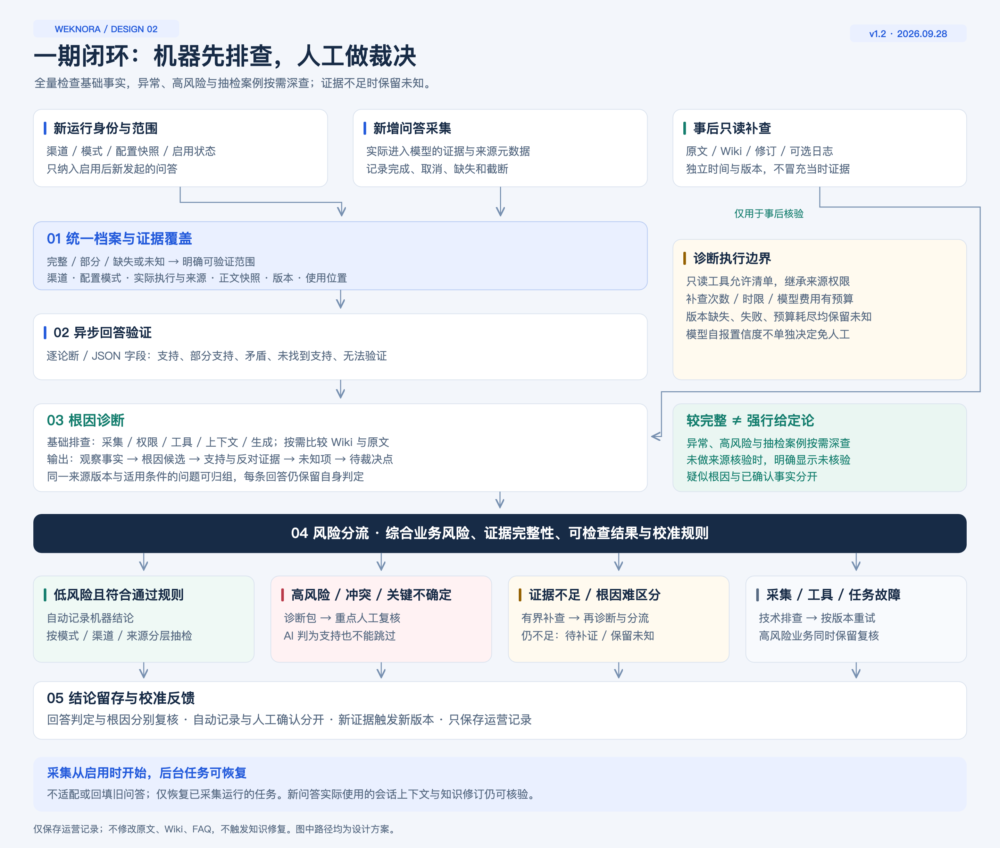
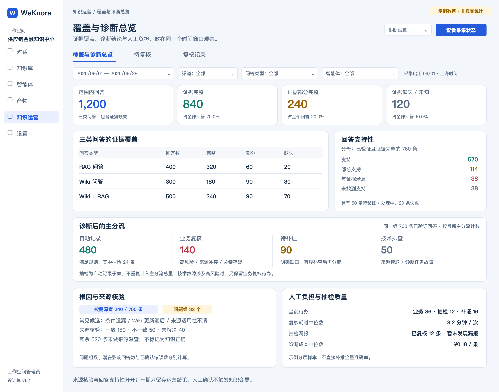
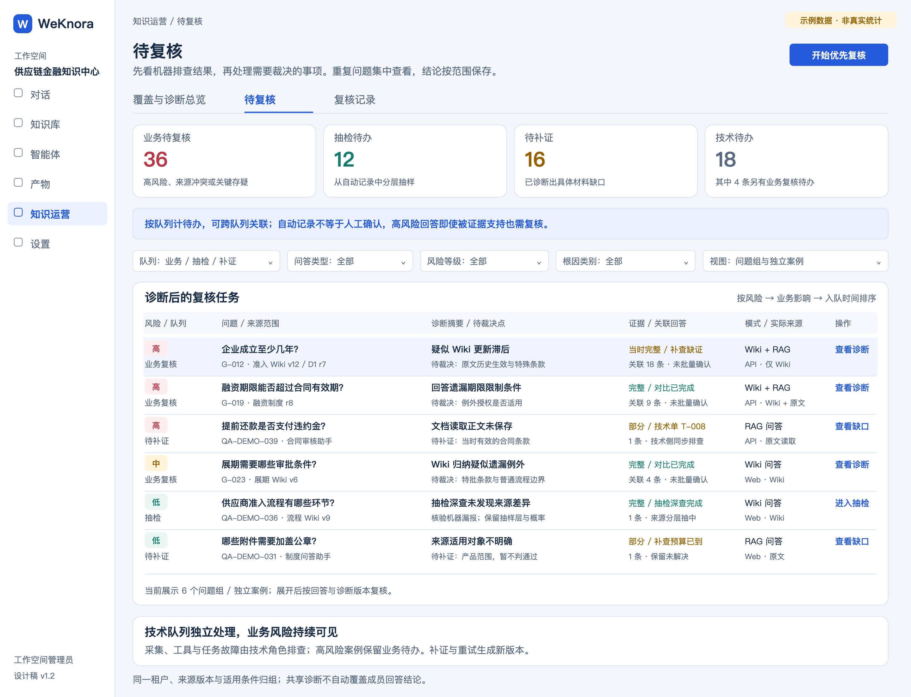
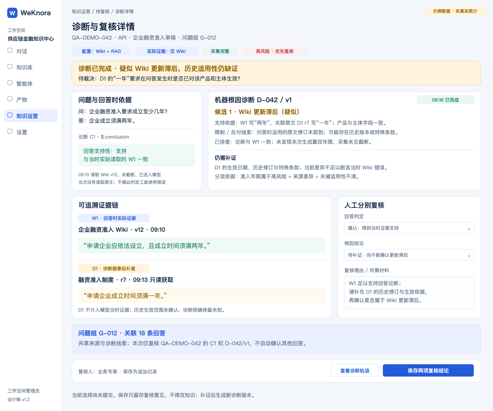
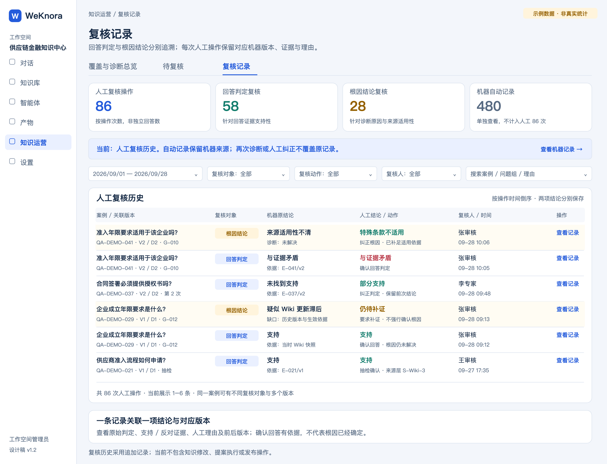

01 · 整体架构与模块边界
一期涵盖观测、回答验证、只读根因诊断、风险分流与重点复核；后续知识处置单独规划。



02 · 观测、诊断与分流流程
新问答采集后，机器先整理事实与根因线索，再分流到自动记录、抽检、业务复核、补证或技术排查。



03 · 覆盖与诊断总览
统一展示证据覆盖、回答支持性、根因与来源核验、分流量及人工负担，明确各项统计分母。



04 · 待复核
按风险与业务影响查看问题组，先读诊断摘要和待裁决点，再进入复核或补证。



05 · 诊断与复核详情
展示当时证据、机器诊断和事后补查，分别确认回答判定与根因结论，保留未解决项。



06 · 复核记录
人工操作按对象与版本追加保存；机器自动记录单独展示，不计作人工确认。


